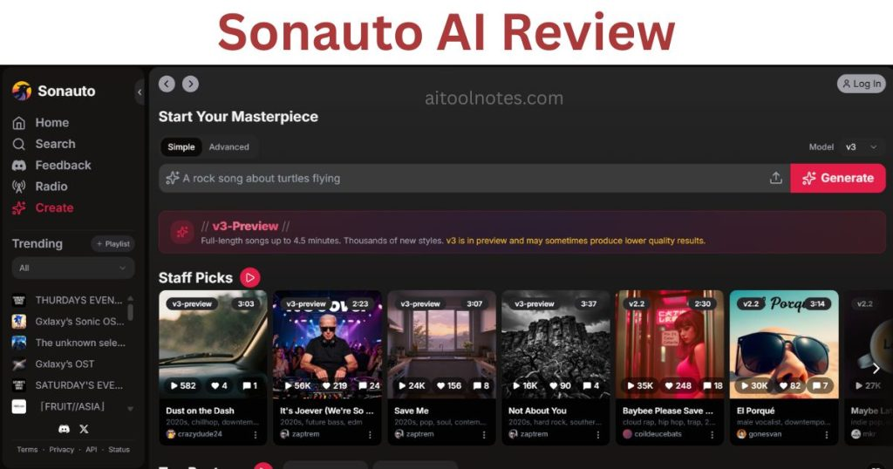
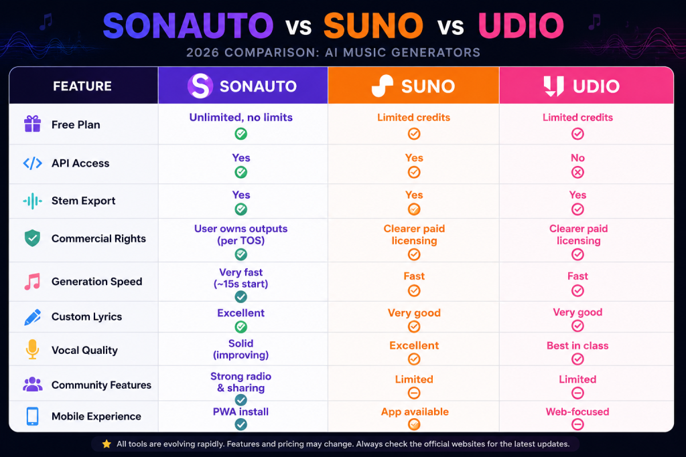

If you’re tired of AI music tools that tease you with a few free songs before slapping on a paywall, Sonauto probably popped up in your searches. It promises unlimited generations with no credit card required, and in 2026 it’s still delivering on that bold claim. I’ve spent the last few weeks putting it through real-world tests—prompting everything from lo-fi study beats to high-energy indie rock—and I’m ready to break down exactly what works, what doesn’t, and whether it’s worth your time.
Quick Verdict
Sonauto AI stands out as the best truly free AI music generator right now. You can create full songs with lyrics, vocals, and stems without hitting any limits or signing up.
- Rating: 8.7/10
- Best for: Hobbyists, YouTube creators, podcasters, students, and anyone experimenting with music on zero budget.
- Key strengths: Unlimited free use, fast generation (audio starts playing in ~15 seconds), strong custom lyrics support, active community, and useful editing tools like extension and inpainting.
- Biggest weaknesses: v3 model is still in preview and can be inconsistent with complex custom lyrics; commercial rights are user-friendly per the TOS but carry the usual AI copyright gray areas; no native mobile app (though the web version installs as a PWA).
If you just want to make music without spending money, start here. For pro-level commercial releases where you need ironclad licensing, you might still lean on Suno or Udio.

What Is Sonauto AI?
Sonauto is a web-based AI music platform launched in 2023 by Hayden Housen and Ryan Tremblay. Backed by Y Combinator, it uses its own latent diffusion model called Melodia to turn simple text prompts or full custom lyrics into complete, radio-ready tracks.
Unlike token-based systems that some competitors use, Melodia works in a continuous audio space. This gives smoother transitions and more creative control, which I noticed right away when regenerating specific sections.
You don’t need any music theory knowledge. Just type a vibe, pick some style tags, and hit generate. The official platform lives at Sonauto.
My Experience Testing Sonauto AI
I tested Sonauto over two weeks in May 2026, running more than 80 generations across genres. Here’s what actually happened when I used it like a real creator.
Prompts I tested
- “Chill lo-fi hip-hop beat for late-night studying, warm vinyl crackle, soft female vocals humming the hook”
- “Upbeat indie rock about chasing dreams in a small town, male vocals with raw energy, driving guitars”
- Custom lyrics: I pasted a full verse + chorus I wrote about city loneliness and asked it to set them to a 90s alternative rock style.
Generation speed: Impressive. Audio starts streaming in about 15 seconds while the rest finishes. A full 3–4 minute track is usually ready in under a minute. Way faster than waiting on some paid tools.
Vocal quality: Solid for a free tool. The v3-preview model handles emotion well—breathy whispers in lo-fi tracks felt natural. With custom lyrics it sometimes drifts off-key or pronounces oddly, but fixing it with inpainting usually solves it in 2–3 tries.
Lyric quality: When I let it write lyrics, they were decent but generic. Feeding my own lyrics produced much better results. The model respected rhyme and structure surprisingly well once I gave clear style tags.
Editing workflow: This is where Sonauto shines. I generated a 3-minute indie track, didn’t like the bridge, selected the section, and used inpainting to replace just that part. I also extended the outro by 60 seconds with a “build to bigger drums” instruction. Stems export worked cleanly—vocals, drums, bass, and other instruments separated nicely for my DAW.
Consistency issues: v3 is preview, so quality varies. One generation might be crystal clear; the next has slight artifacts or shorter length. Voice gender and timbre aren’t 100% predictable even with the same prompt.
What impressed me most: The community radio feature. I created a personal “station” and discovered tracks from other users that sounded shockingly polished. It feels like a real creative ecosystem, not just a generation tool.
How it compared during testing: I ran identical prompts on Suno and Udio (using their free tiers). Sonauto matched or beat them on speed and freedom, but Udio still edges it out on vocal realism and Suno feels more “polished” out of the box. For zero cost, Sonauto won every session.
Frustrating limitations: No offline mode, and sometimes you burn 4–5 generations before nailing the energy. But at zero cost, that’s easy to forgive.
Key Features of Sonauto AI
Here’s how the main tools actually perform in practice:
Text-to-Music Generation Type a simple description and get a full song. Thousands of style combinations make it easy to dial in exactly what you want.
Custom Lyrics Support Paste your own words and the AI composes music around them. Best feature for songwriters who already have ideas.
Stem Export Download separate tracks (vocals, drums, etc.). Perfect for remixing or importing into Ableton or Logic.
Song Extension Continue a track seamlessly—great for turning a 2-minute idea into a full 4-minute piece.
Inpainting (Section Replacement) Highlight any part of the song and regenerate only that section. Huge time-saver.
BPM Controls Set exact tempo—essential for syncing with video or dance projects.
AI Voice Features Works with presets and some voice guidance. Not full cloning, but effective for most styles.
Community Features Share songs, browse trending playlists, join groups, and listen to a personalized AI radio station. The social side keeps me coming back.
API Access Developers can integrate it. Pricing is straightforward.
Sonauto AI Pricing
Is Sonauto Really Free? Yes—completely. No sign-up needed to start generating, and there are no daily limits or credit caps for normal use. Create an account only if you want to save projects. This is still rare in 2026 and the main reason Sonauto feels like such a standout.
API Pricing for Developers If you’re building something bigger, the Sonauto Developers pricing page offers clear plans starting at $11/month. New accounts get some free credits to test with, and pay-as-you-go is affordable.
Commercial Rights and Copyright Concerns
According to the Sonauto Terms of Service (updated January 26, 2026), you own the outputs you generate. The TOS explicitly states that restrictions on using the service commercially do not limit your use of the songs you create. You can monetize them.
That said, AI music copyright law is still evolving everywhere. Sonauto makes no warranties about copyrightability, so always keep a dated screenshot of the terms when you generate something important. For safe commercial work, many creators still prefer tools with explicit licensing statements. Best practice: use Sonauto for drafts, inspiration, or non-monetized content, and double-check your platform’s AI policies (YouTube, Spotify, etc.) before uploading.
Real User Reviews From Reddit, Trustpilot, Product Hunt, and YouTube
I dug through hundreds of recent posts so you don’t have to.
Positive feedback
- Reddit (r/udiomusic and r/sonauto): “V3 model is significantly better… Everything is free and unlimited which is insane. Generated 50+ songs in two days.”
- Product Hunt (4.5/5 rating): Users love the custom lyrics workflow and say they listen to the community playlist instead of Spotify some days.
- YouTube comments: “More freedom with artist styles… not as predictable as Suno. Lyric quality keeps improving.”
Critical feedback
- Trustpilot: Some users complain that custom lyrics can sound forced or that v3 occasionally outputs shorter/noisier tracks.
- Reddit: A few mention voice consistency issues and the need to regenerate multiple times for perfect results.
- General consensus: Incredible value for free, but not yet perfect for pro studio work.
Overall, the vibe is genuinely excited. Most people call it the best free option by a mile.
Sonauto vs Suno vs Udio
Here’s a side-by-side look based on my testing and current 2026 data:
| Feature | Sonauto | Suno | Udio |
|---|---|---|---|
| Free Plan | Unlimited, no limits | Limited credits | Limited credits |
| API Access | Yes | Yes | No |
| Stem Export | Yes | Yes | Yes |
| Commercial Rights | User owns outputs (per TOS) | Clearer paid licensing | Clearer paid licensing |
| Generation Speed | Very fast (~15s start) | Fast | Fast |
| Custom Lyrics | Excellent | Very good | Very good |
| Vocal Quality | Solid (improving) | Excellent | Best in class |
| Community Features | Strong radio & sharing | Limited | Limited |
| Mobile Experience | PWA install | App available | Web-focused |
Detailed comparison analysis Sonauto wins on price and freedom—no contest. Suno feels more “finished” and has stronger built-in structure. Udio still leads in vocal realism and emotional delivery. If budget is your top priority, Sonauto is the clear choice. For polished commercial work, many creators use Sonauto for ideation and Suno/Udio for final masters.

[Insert Sonauto vs Suno vs Udio comparison table graphic]
Pros and Cons of Sonauto AI
Pros
- Truly unlimited and free for everyday use
- Fast, intuitive workflow
- Powerful editing tools (extension, inpainting, stems)
- Growing community and discovery features
- Developer API with transparent pricing
- BPM control and strong custom lyrics support
Cons
- v3 preview can be inconsistent
- Commercial licensing still has the usual AI uncertainty
- Voice and output predictability varies
- Web-only (no native app)
- You may need several generations to nail a track
Who Should Use Sonauto AI?
- Content creators who need quick background tracks for YouTube, TikTok, or podcasts
- Songwriters testing lyrics and melodies before studio time
- Students and educators exploring AI music
- Developers integrating music generation via API
- Anyone who wants to experiment without spending money
Who Should Avoid It?
- Professionals needing guaranteed commercial licensing today
- Users who want one-click perfect vocals every time
- People who need offline or mobile-native apps
Final Verdict
In 2026, Sonauto AI is the best free AI music generator you can actually use every day without restrictions. The unlimited policy, solid Melodia model, and thoughtful editing tools make it genuinely fun and productive.
It’s not perfect—v3 is still maturing and the broader AI copyright landscape is murky—but for most creators it delivers more value than anything else at $0. I’ll keep using it for drafts and fun projects, and I recommend you try it yourself right now at Sonauto.
If your needs grow beyond free, the jump to Suno or Udio is easy. But right now? Sonauto is the smartest starting point.
Frequently Asked Questions
Is Sonauto AI free?
Can I monetize Sonauto songs?
Is Sonauto better than Suno?
Does Sonauto have an app?
Is Sonauto safe?
Can Sonauto create copyright-free music?
Does Sonauto support custom lyrics?
Ready to try it? Head over to Sonauto and generate your first track in under a minute. No sign-up required.